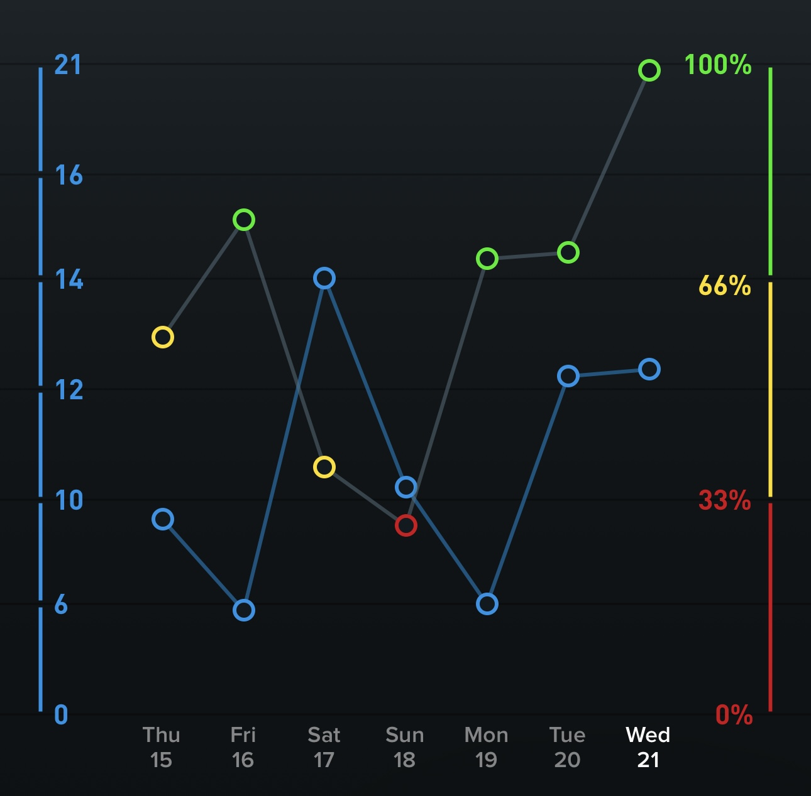

It's December and that means it's time to relax, decompress and reflect on lessons that I learned this year.
Make progress (on average)
There have been plenty of times this year where I felt like I went backwards instead of forward. I realized that it's perfectly fine to not make progress as long as, on average, you move forward. What I mean by this is that you might have bad days / weeks / months but as long you pick yourself up and follow up with good days / weeks / months you'll move the needle forward.
Health is wealth
After a few random health scares this year I realized for the first time in my life that health is wealth. I knew that before of course, but more on a conceptual level. This year I learned that on a practical level and I've become very grateful for the genetics and generally good health that I have.
I've bought a fitness tracker called whoop and it's been very helpful in understanding how my actions map to my overall well-being. Here's a chart of my recovery vs exertion for this week (right side is recovery, blue/left side is exertion):

I'm feeling pretty good this week and there's data to back it up (lots of green dots)!
It's all about insights
For the longest time in my career, I've been excited about tools. Anything from the newest machine learning library in Python to Tableau. Lately, I don't get as excited about tools but rather about insights that I can gather from the data. So now when I work on a data science / analytics project I focus a lot more on insights as opposed to pondering which tool is the shiniest.
That's all folks! Happy Holidays!